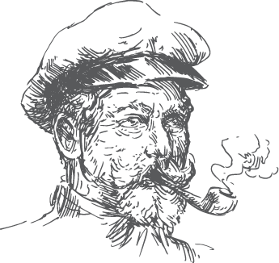

Ahoy ye landlubbers
'tis a simple bookmarklet (or favelet if ye prefer) that scans th' current web page fer element IDs that can be used fer anchor-links.
'twas designed t' make it easier fer non-technical web editors t' link a section on a page, without havin' t' look at th' source code.
📦 Installation
Simply drag th' link below t' yer bookmarks toolbar. Click yer new Ahoy button t' scan th' current website.
📜 Author
Ahoy was developed by Marcus Olovsson (@Arood)

📢 Acknowledgements
Vector illustrations are from Freepik